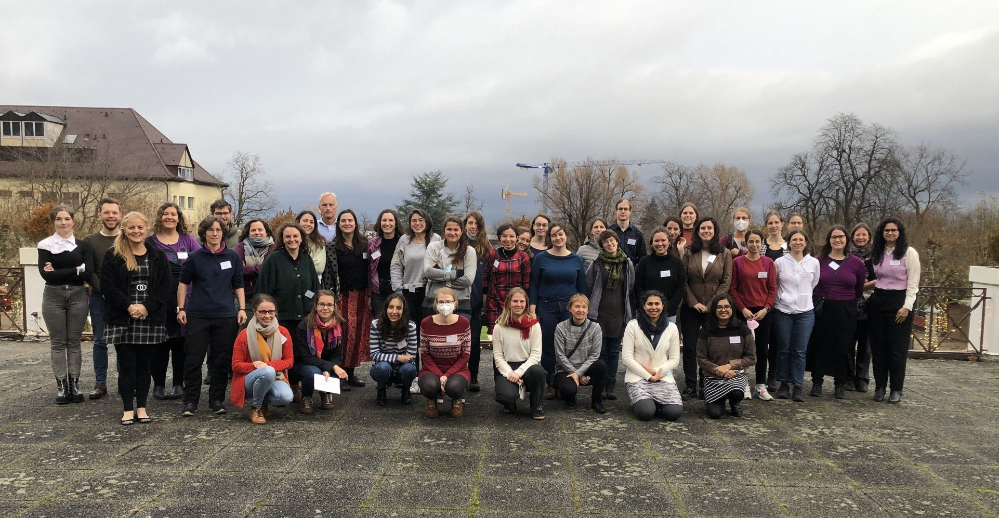
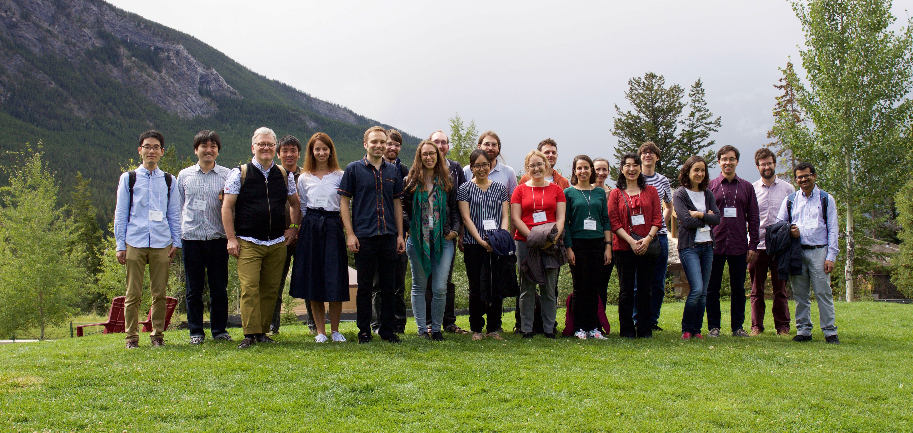
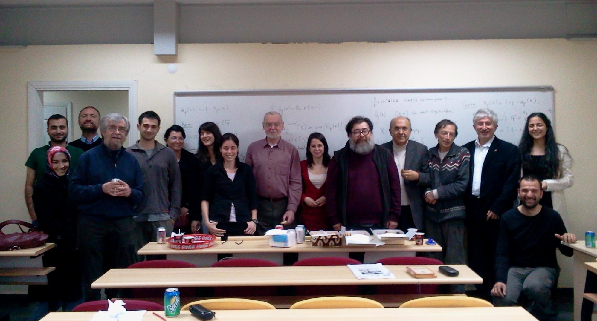

A conference with Vaughan Jones on Knot Theory, March 2-4, 2012. ETH-UCPH-TUM Workshop on Graphical Models,
Science and Study Center Raitenhaslach, October 10-14, 2022. Women in Algebra and Symbolic Computations II,
Kurpark-Hotel in Bad Dürkheim, November 29th - December 1st, 2021. Workshop Mutations: Mirror Symmetry, Deformations, and Combinatorics,
Banff International Research Station, August 11-16, 2019. Tensors in statistics, optimization and machine learning,
IMPAN, Warsaw, Poland, 21-25 November, 2022.
 BIRS-CMO Workshop: Computations and Data in Algebraic Statistics,
BIRS-CMO Workshop: Computations and Data in Algebraic Statistics, May 14-19, 2023, Casa Matemática Oaxaca (CMO). Functoriality and Pairing, A course with Robert Langlands, Ilhan Ikeda, Ali Altug, Cihan Saçlıoglu,
University of Galatasaray, Istanbul, March 30-April 27, 2011. Algebraic Structures in Statistical Methodology,
Mathematisches Forschungsinstitut Oberwolfach, 5-9 December, 2022. Issues in Dynamic Decision Theory,
Konstanz University, July 6 – 8, 2023. Summer School on Lattice Polytopes,
Osaka, July 23 - August 10, 2018.